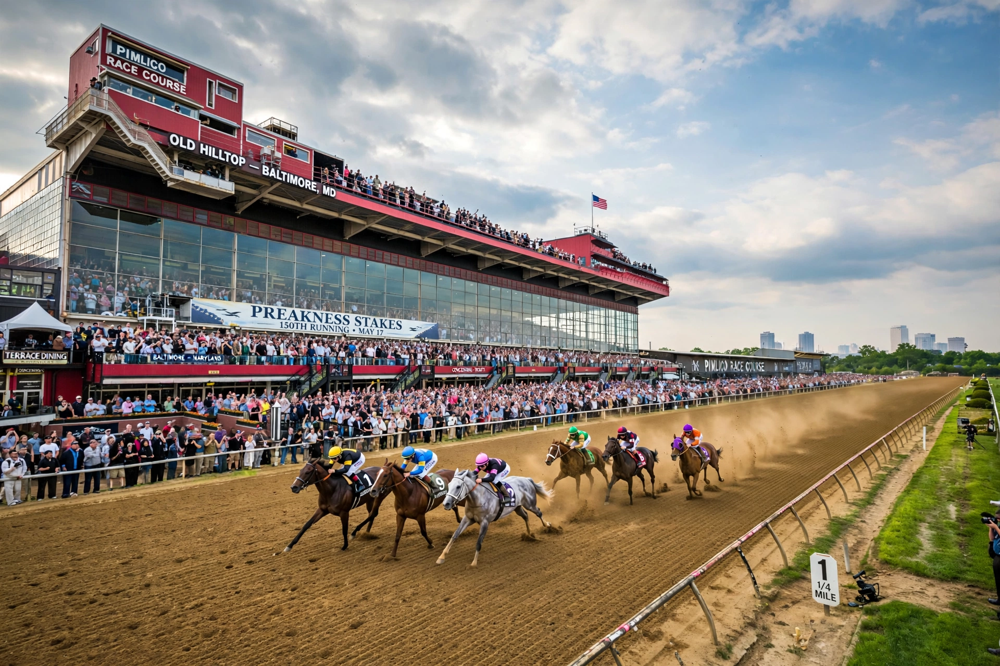

| Preakness Stakes | |
|---|---|
| Class | Grade I |
| Location | Pimlico Race Course, Baltimore, Maryland |
| Inaugurated | 1873 |
| Race type | Thoroughbred |
| Distance | 1 3/16 miles (9.5 furlongs) |
| Surface | Dirt |
| Track | Left-handed |
| Qualification | Three-year-olds |
| Purse | US$2 million (2024) |
The Preakness Stakes is an American horse race held on the third Saturday in May each year at Pimlico Race Course in Baltimore, Maryland. It is a Grade I race run over a distance of 9.5 furlongs (1 3/16 miles) on dirt. Colts and geldings carry 126 pounds (57 kg); fillies 121 pounds (55 kg). It is the second jewel of the American Triple Crown, following the Kentucky Derby and preceding the Belmont Stakes.

First run in 1873, the Preakness was named by a former Maryland governor after the colt Preakness from Milton Holbrook Sanford's Preakness Stud in Wayne, New Jersey, who won the Dinner Party Stakes on the day Pimlico opened in 1870. The race has been run at several distances over its history; the current 1 3/16-mile distance dates from 1925. It was not run in 1891, 1892, and 1893, and from 1894 to 1908 it was held at Gravesend Race Track on Coney Island, New York.
The winner is draped with a blanket of yellow daisies painted to resemble black-eyed Susans, the state flower of Maryland (whose bloom season actually makes genuine black-eyed Susans unavailable in May). The crowd traditionally sings "Maryland, My Maryland" before the race. The weather vane atop the Old Clubhouse cupola is painted in the winning owner's silks immediately after the race.
The fastest time at the current distance is 1:53, set by Secretariat in 1973 (officially recognised in 2012). Eddie Arcaro is the most successful jockey with six wins, and trainer Bob Baffert and R. Wyndham Walden share the record of eight training wins (Baffert) — Walden won seven in the 19th century.